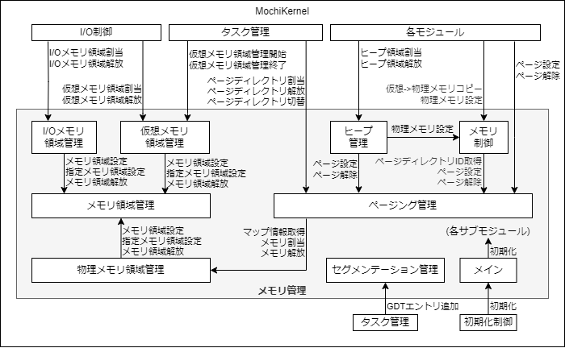

サブモジュール構成
メモリ管理モジュールのサブモジュール構成について以下に示す。

サブモジュール構成図
サブモジュール構成図
サブモジュール概要
| # | サブモジュール名 | 概要 | |
| 和名 | コード名 | ||
| 1 | メイン | Memmng | メモリ管理モジュールの共通的な処理を行う。 |
| 2 | セグメンテーション管理 | MemmngSgmt | グローバルディスクリプタテーブルを管理しCPUに設定する。 |
| 3 | ページング管理 | MemmngPage | プロセス毎のページディレクトリテーブルとページテーブルの管理を行う。 |
| 4 | 物理メモリ領域管理 | MemmngPhys | システム全体の物理メモリ領域の管理を行う。 |
| 5 | 仮想メモリ領域管理 | MemmngVirt | プロセス毎の仮想メモリ領域の管理を行う。 |
| 6 | メモリ領域管理 | MemmngArea | 物理メモリ領域管理と仮想メモリ領域管理の共通処理を行う。 |
| 7 | I/Oメモリ領域管理 | MemmngIo | ドライバプロセス向けにI/Oメモリ領域の管理を行う。 |
| 8 | ヒープ管理 | MemmngHeap | カーネル用ヒープ領域の管理を行う。 |
| 9 | メモリ制御 | MemmngCtrl | メモリコピーなどのメモリに関係する処理を行う。 |